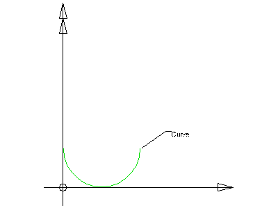

8.15.3.2 IfcArbitraryOpenProfileDef
| Beliebiges offenes Profil |
The open profile IfcArbitraryOpenProfileDef defines an arbitrary two-dimensional open profile for the use within the swept surface geometry. It is given by an open boundary from which the surface can be constructed.
HISTORY New entity in IFC2x.
Informal Propositions:
- The Curve has to be an open curve.
Figure 355 illustrates the arbitrary open profile definition. The Curve is defined in the underlying coordinate system. The underlying coordinate system is defined by the swept surface that uses the profile definition. It is the xy plane of:
The Curve attribute defines a two dimensional open bounded curve.
 |
Figure 355 — Arbitrary open profile |
XSD Specification:
<xs:element name="IfcArbitraryOpenProfileDef" type="ifc:IfcArbitraryOpenProfileDef" substitutionGroup="ifc:IfcProfileDef" nillable="true"/>
<xs:complexType name="IfcArbitraryOpenProfileDef">
<xs:complexContent>
<xs:extension base="ifc:IfcProfileDef">
<xs:sequence>
<xs:element name="Curve" type="ifc:IfcBoundedCurve" nillable="true"/>
</xs:sequence>
</xs:extension>
</xs:complexContent>
</xs:complexType>
EXPRESS Specification:
|
ENTITY IfcArbitraryOpenProfileDef
|
|
|
| WR11 | : | ('IFCPROFILERESOURCE.IFCCENTERLINEPROFILEDEF' IN TYPEOF(SELF)) OR
(SELF\IfcProfileDef.ProfileType = IfcProfileTypeEnum.CURVE); | | WR12 | : | Curve.Dim = 2; |
|
 EXPRESS-G diagram
EXPRESS-G diagram
Attribute Definitions:
| Curve | : | Open bounded curve defining the profile. |
Formal Propositions:
| WR11 | : |
The profile type is a .CURVE., an open profile can only be used to define a swept surface.
Note This does not apply to the subtype IfcCentreLineProfileDef.
|
| WR12 | : | The dimensionality of the curve shall be 2. |
Inheritance Graph:
|
ENTITY IfcArbitraryOpenProfileDef
|
 Link to this page
Link to this page